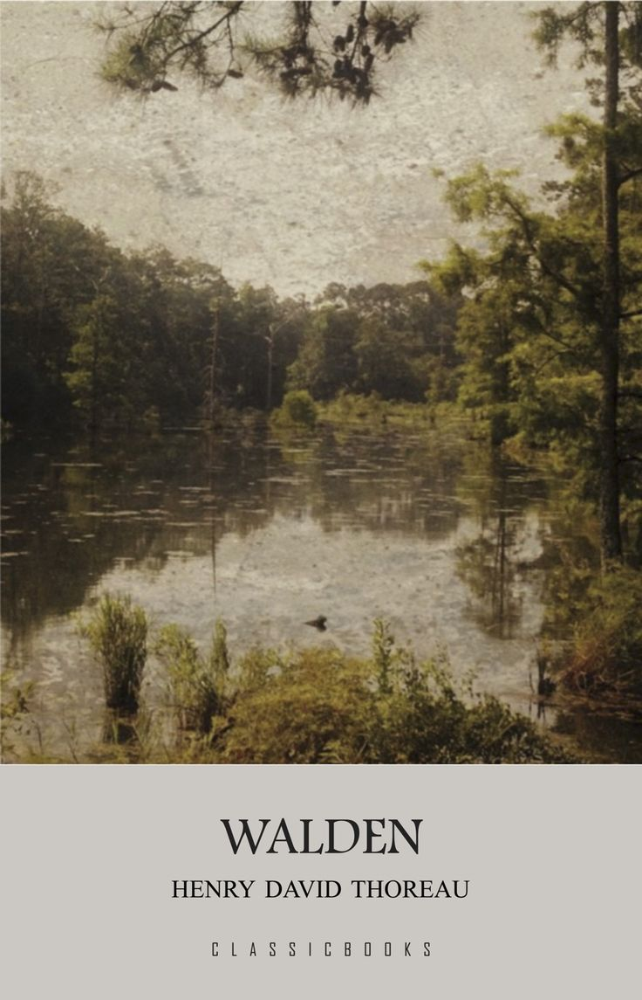

Title: Walden
Author: Henry David Thoreau
Genre: Non-fiction, Philosophy, Nature Writing
Country: United States
Publication Year: 1854

Walden is a book by Henry David Thoreau that was first published in 1854. It is a reflection on simple living in natural surroundings, and it is considered one of the most important works of American literature. The book is based on Thoreau's experiences living in a cabin he built near Walden Pond in Massachusetts for two years, two months, and two days.
I went to the woods because I wished to live deliberately, to front only the essential facts of life...And see if I could not learn what it had to teach, and not, when I came to die, discover that I had not lived!
Things do not change; we change.
There is no remedy for love, but to love more.
This has been my favourite book of all time TM. A little voice in my head always tell me to "Do a Walden", whenever I can't deal with life anymore. And I go to look for my handy machete.
I've had FOMO for the longest
time growing up. But since I've read Walden, my desire is not to keep up
with the Jonses, but to keep up with myself. Chill out. Do a Walden. Do a
Socrates...Know Thyself, they say.
But what do, if you know nothing?